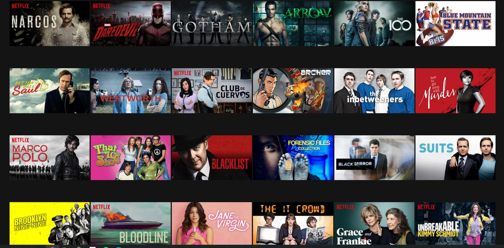

Pronto para assistir? Informe seu email para criar ou reiniciar sua assinatura.
Aproveite na TV.
Assista em Smart TVs, PlayStation, Xbox, Chromecast, Apple TV, aparelhos de Blu-ray e outros dispositivos.
Assista quando quiser..
Assista no celular, tablet, Smart TV ou notebook sem pagar a mais por isso.
Baixe séries para assistir offline.
Salve seus títulos favoritos e sempre tenha algo para assistir.

Crie perfis para crianças.
Deixe as crianças se aventurarem com seus personagens favoritos em um espaço feito só para elas, sem pagar a mais por isso.
As melhores series estão aqui!
Suits
Mike Ross é um garoto que abandonou a faculdade de direito mas, brilhante como é, consegue uma entrevista com o respeitado Harvey Specter, um dos melhores advogados de Manhattan. Quando percebe o talento nato e a memória fotográfica do garoto, Harvey o contrata e, juntos, eles formam uma dupla imbatível.
92% de aprovação.
As Visões da Raven
Raven Baxter poderia ser uma típica adolescente, se não fosse pela excepcional inteligência e a estranha capacidade de prever o que vai acontecer em um futuro próximo. Esse dom peculiar causa mais problemas na vida de Raven do que se pode imaginar.
90% de aprovação.
Todo Mundo Odeia o Chris
Em 1982, Chris completa 13 anos e muda-se com a sua família para Bedford-Stuyvesant, no Brooklyn. Lá, Chris vive situações corriqueiras da vida de um adolescente, tanto nas histórias que realmente acontecem quanto nos pensamentos que são expostos de uma forma humorística.
88% de aprovação.
Round 6
Round 6, série sul-coreana original da Netflix, acompanha um grupo de pessoas desesperadas por dinheiro que recebem um misterioso convite para participar de jogos competitivos inspirados em brincadeiras infantis.
92% de aprovação.
Eu, a Patroa e as Crianças
Tudo o que Michael Kyle (Damon Wayans) quer é ter uma vida tradicional com sua família. Mas sua esposa, a comerciante Janet 'Jay' (Tisha Campbell-Martin), o filho que é fã de rap e passa longe de ser o gênio da família, Michael Jr.
76% de aprovação.
Um maluco no pedaço
Após arrumar confusão com pessoas perigosas de seu bairro, na Filadélfia, a mãe de Will, temendo pelo futuro de seu filho, resolve mandá-lo para viver com sua irmã Vivian (Janet Hubert-Whitten) e seu cunhado Philip (James Avery), um advogado que se tornou juiz e tem uma vida muita bem sucedida.